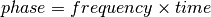
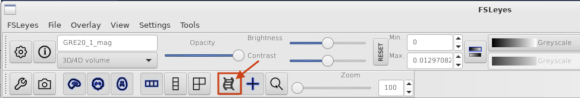
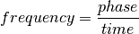

Exercise 1¶
Objectives¶
- Understanding the data required for QSM
- Understanding why we need to correct the phase data before mapping the magnetic susceotibility
Understanding multi-echo GRE data¶
As mentioned in the introduction, water protons resonate in different frequencies because of the tissue magnetic susceptibility. The frequency difference in brain tissues can be detected as the difference in phase accumulation over time (see Eq. (1)). Therefore, the phase measurement of the MRI signal allows us to map the magnetic susceptibility of brain tissues.
(1)¶
To compute a magnetic susceptibility map, multi-echo gradient-echo images are usually used because it can provide phase images. Now, please go to the exercise directory which is located in ~/qsm_tutorial/. You can use the following command in the terminal:
cd ~/qsm_tutorial/
To view the content of the directory using the command:
ls
You will see two NIfTI images (.nii.gz) and a few JSON files (.json) in the directory. The two NIfTI images correspond to the magnitude (mag.nii.gz) and the phase MR signal (phase.nii.gz). Both of them are 4D data, with the first 3 dimensions containing spatial information (i.e the image of the brain) and echo time (i.e. the time we sampled data) in the 4th dimension. The JSON files contain important information such as the echo times (TE) and magnetic field strength (in Tesla), which allow us to compute the magnetic susceptibility with the correct unit.
Let’s take a look of the magnitude images. You can do that by calling the image viewer FSLeyes in the terminal:
fsleyes mag.nii.gz
Once you opened the magnitude images in the viewer, click the movie button to see how the brain images change over time.
You can also press ctr+3 to see the plot of signal evolution at different brain tissues. Select a few data points in the brain, how do you describe the signal curve?
Let’s have a look of the phase images. You can close the viewer and use the following command in the terminal:
fsleyes phase.nii.gz
The phase images look very different compared to the magnitude images and with the current display windowing it is hard to see any contrast of brain tissues. Adjust the windowing to [-3,1], you should be able to identify some brain structures. You might wonder why the tissue contrasts are somehow ‘hidden’ in the data. Before answering this question, let’s focus on how the phase developed over time which is the main objective of this exercise. Change the window back to [-3,3] and click the movie button again to see the phase development over time. Based on Eq. (1), it is expected the phase increases/decreases monotonically. In other words, we should observe the phase images become brighter/dimmer in the later echoes. What do you see in the later echo images?
It seems that in some regions they follow the description in Eq.1 but it is certainly not the case in some regions. Let press ctr+3 again to see the phase curve in different positions of the brain. Can you identify the cause of the problem?
- Somebody screwed up the acquisition
- The subject moved during the scan
- The phase is bounded to certain values
- Fast switching gradient introduced extra phase
[Answer]()
In order to correctly estimate the frequency shift using Eq.1, this phase problem has to be addressed otherwise we will compute wrong magnetic susceptibility in those affected regions. To unwrap the phase and map to the correct values, SEPIA provides several algorithms to do the job.
SEPIA¶
SEPIA is a pipeline tool to process phase images in Matlab. To use SEPIA, please open a Matlab application in the cluster by typing:
matlab2016b,
click OK, leave the runtime as default and specify the memory requirement as 10 (GB).

Once you have the Matlab opened, first go to the tutorial directory and add the SEPIA home directory to the Matlab Path. You can simply do this by typing the following command in the Matlab’s command’s window:
addpath('~/qsm_tutorial/sepia/');
Note
The copy of SEPIA that you have in the tutorial directory already included all the external toolboxes required by SEPIA. If you want to know how to setup SEPIA from the start after today tutorial, you can refer to the other wiki pages to see how it can be done.
Now, enter sepia in the command window. A graphical user interface should be popped up momentarily. The first tab in SEPIA provides a one-stop application to process the raw phase data to a QSM map. Alternatively, we can break down the processing pipeline into several steps and SEPIA also supports this approach.

The first thing you need to do before using the Sepia’s pipeline is to create a header file that contains all essential information for the rest of the processing. To do this select the Utility tab and then select Get header info in the drop-down menu. This function provides several ways to extract the header information from different types of files. With all the NifTI images and JSON files stored in the same place, we can use ‘Op 2’ routine. Click ‘Open’ next to ‘Op 2’ and select ~/qsm_tutorial as the input. The output of the header file will be stored in the same directory as your input by default. Click Save header to save the file. When you see the message ‘’ in the command window, the file is saved.
Go the Phase unwrapping tab and you will see two panels under the tab: the I/O is for data input and output and the Total field recovery and phase unwrapping is for true phase accumulation estimation.

In the I/O panel, select the ~/qsm_tutorial/ in the Input directory and check the FSL brain extraction. Having an accurate brain mask is important to produce a high-quality QSM map.
In the Total field recovery and phase unwrapping panel, keep the Echo phase combination method as ‘Optimum weights’ and change the Phase unwrapping method to ‘Laplacian STI Suite’. Then click the Start button.
You should now see some messages are displayed in the command window. Once it finishes, you will see the message Done. Now we can check the output results. Use FSLeyes to open the Sepia_unwrapped-phase.nii.gz in the output directory and see the phase development over time again. Can you see all the zipper lines are gone and the changes of phase behave as predict by Eq. (1)?
Open the Sepia_total-field.nii.gz file in the output directory. This is the result we needed in the next exercise. This map is the average phase accumulation between two successive echoes. With this image, we have the phase accumulation and we also know the exact time to develop this phase. We can then compute the frequency shift by rewriting Eq. (1) to:
(2)¶
Proceed to Exercise 2.